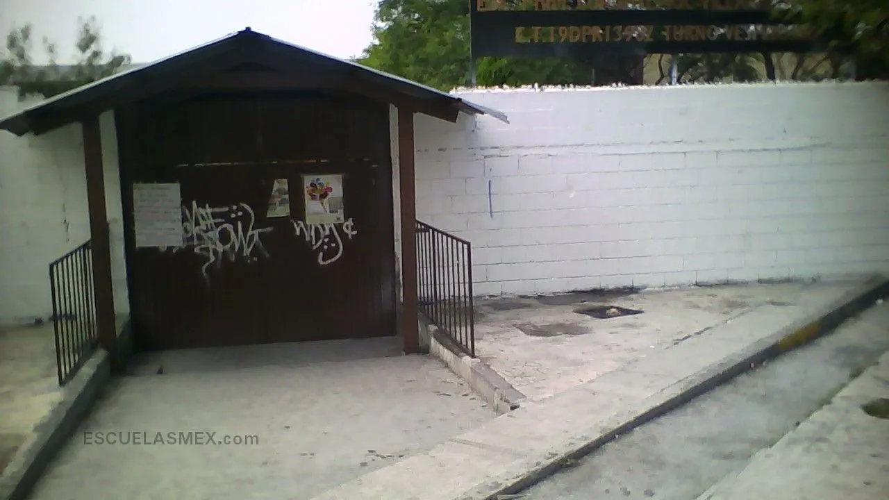
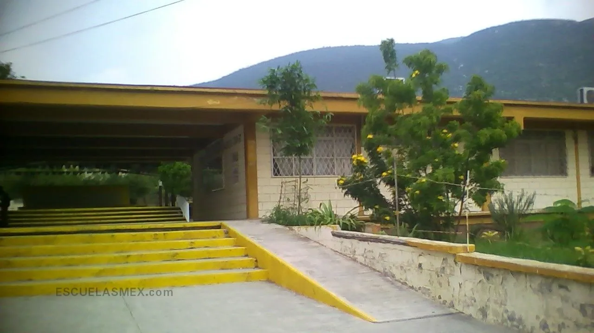
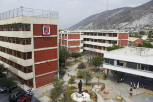
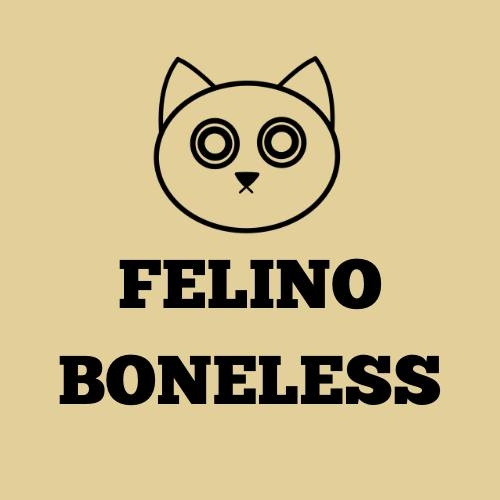

Mi Perfil Académico
Carrera: Ingeniería en Sistemas - FIME UANL
Semestre actual:6
Monterrey, Nuevo Leon, Mexico
brayanlopk10@hotmail.com
Alumno de la Facultad autonoma de nuevo leon, de la facultad de ingenieria mecanica y electrica
Mi Trayectoria Personal y Profesional

Escuela Primaria
Nombre de la escuela: Cuauhtemoc Villarreal Cirilo
Periodo: 2007-2012
Descripción breve: Aunque no fue mi primera escuela, fue en la que dure mas tiempo
Página de la Primaria
Escuela Secundaria
Nombre de la escuela: Escuela secundaria no. 68
Periodo: 2012-2016
Descripción breve: Aqui pase los 3 años enteros, sin cambios
Página de la Secundaria
Preparatoria
Nombre de la escuela: Preparatoria tecnica general Emiliano Zapata
Periodo: 2016-2019
Descripción breve: En esta preparatoria lleve exitosamente mis 3 años como tecnico y a su vez forme parte de un equipo de robotica dentro de esta
Página de la PreparatoriaMis Trabajos
Trabajo 1: Plomeria
Periodo: 2018 - 2020
Descripción: Trabaje informalmente e informalmente en la plomeria esas fechas, ya sea instalando pvc y cpvc en HEB, prolect, casa habitacion, etc.
Trabajo 2: Instalador de camaras
Periodo: 2021
Descripción: En este trabajo era tecnico instalador de camaras y dure un año
Trabajo 3: Sushi y asi
Periodo: 2022 - 2023
Descripción: En este trabajo era cocinero y dure un año

Trabajo 4: Felino boneless
Periodo: 2023 -2025
Descripción: Trabajo de medio turno, con horarios variados
Mis Hobbies
Me gusta leer, leo cuanto puedo y cuando puedo. La caza del carnero salvaje es mi libro favorito
Cuando puedo juego, unos ejemplos son: league of legends, arc raiders, fallout, disco elysium